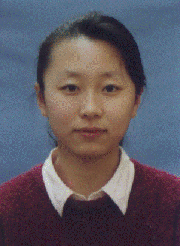

让我们一同实现理想
尊敬的各位领导、老师、同学们：
记得在一次演讲比赛中，在即兴演讲部分，一位同学抽到的题目是：《今天我是班主任》，她当时微笑着说：“说实话，今天是我这辈子第一次当这么大的官，我当上主任了”。“主任”可不是好当的，方方面面的事都要操心费神，而大学里的班长，真的就充当起着“班主任”的角色，班里的大事小情，都要无一遗漏的照顾到。班长，是最“小”的官，也是最“大”的官，这就是我作了两年班长的感受。不过回头看看，这鲜活丰富的两年，我的最大收获，并不单单记下了多少个单词习语，弄通了多少句意文法，或是练就了叠方块被那样的生活技能，而是学会了做一个对别人有益处，有帮助的人，做
记得在一次演讲比赛中，在即兴演讲部分，一位同学抽到的题目是：《今天我是班主任》，她当时微笑着说：“说实话，今天是我这辈子第一次当这么大的官，我当上主任了”。“主任”可不是好当的，方方面面的事都要操心费神，而大学里的班长，真的就充当起着“班主任”的角色，班里的大事小情，都要无一遗漏的照顾到。班长，是最“小”的官，也是最“大”的官，这就是我作了两年班长的感受。不过回头看看，这鲜活丰富的两年，我的最大收获，并不单单记下了多少个单词习语，弄通了多少句意文法，或是练就了叠方块被那样的生活技能，而是学会了做一个对别人有益处，有帮助的人，做
一个能团结同学带领大家共同进步的班长。作一名班长，最重要的是心里装着大家，为大家着想，要热心，也要有耐心并且细心。班里的二十三名同学，来自东西南北不同方向，操着不同的乡音，远离了家，远离了父母，汇聚在这个完全陌生的地方。
把这小小的班级变为我们这四年甚至是永远的最可依靠、信赖的大家庭，同学们才不会孤独无助。从开学第一天起，我就开始了为大家营造一个新家的“大工程”，首先是教室布置：暖壶、水盆、水桶、毛巾、香皂，一应俱全，柜子里摆着胶水、信封、小刀等工具；精心挑选了蓝白格子的窗纱、纯白的桌布。每块桌布的裁剪、缝边、松紧带的穿系，然后再一个个规规矩矩地套在每张课桌上，虽然是不能再小的琐事，我把它们看作一件艺术品来完成，让每个同学都感到家中的清爽整洁。把全班的合影放大，用了整整一个周末的时间自己动手用废纸盒和包装软纸制成的别致的像框，把我们的“全家福”挂在墙上，那一张张笑脸，笑得那么可爱、可亲，每当我们看到它，一种由衷的“家”的感觉便充溢教室每个角落。家的感觉，在于家庭成员之间彼此的关怀和默契。校园生活很清苦，而我的家在本市，每逢节假日，我就请同学去家里，做上一桌招待她们。每个假期，同学们都回家了，我总是打扫好教室，卸下满是灰尘的窗帘，洗干净，再收拾好用具品才离开教室。开学前，我又是第一个回到班级，做第一份值日，平时更要留意班级值日有没有做好，走时有没有关灯。这些事情，做久了，便成了一种自然，也是一种快乐。记得那次义务献血，班里有九名同学参加，为了及时地给他们补充营养，我去采购了一大堆营养品，还请了几位同学回家，一边看菜谱，一边手忙脚乱地煮枣、炖鸡。那是我们第一次炖鸡，又是兴奋又是紧张害怕，怕咸了又怕淡了，每道工序都特别小心，经过又是洒又是漏踉踉跄跄的一路，当我们最终端着一大锅热气腾腾的鸡汤分给同学们的时候，心里充满着无限的满足与欢愉。虽然不是最美的佳肴，但却蕴含着我们的一片深情，同学们也深深体味到家的温暖。一次次的诚挚，我们的家更加暖人了。同学生日，黑板上会出现“生日快乐”几个跳跃着的充满祝福的字符。班里流传着《九五英一班乱写本》，你的喜怒，你的荣辱，对班级的建议，甚至同学之间的矛盾，写出来了，就烟消云散了。那是我们的世界，不必掩饰，不必保留。一位同学在本上写：“感谢我们的家，是它给了我无尽的信心和活力”。从此我们是一家人，一个人生病住院，全班同学轮流为她送饭，一个人遇到了意外，全班同学帮忙解决。二年级上学期，我组织召开了一次班级座谈会，理想、追求、人生价值、学习生活、同学关系无所不谈，我没有想到每个人都是那么真诚，甚至埋藏心底最深处的，也说给大家听，说者动情，听者落泪，每个人都那么投入，甚至忘了时间。班会从傍晚六点开始，到晚上快十一点了，大家仍不愿结束，直到负责教学楼治安的老师来敲门，大家才不情愿地离开。这次班会在系里院里引起巨大反响，原来大家都说大学生个性强，人心散，很难彼此真正融洽，开班会越来越难。而在我们班，情况是完全不同的，因为班会就是我们二十三人的家庭会议。是的，人与人之间的生命轨迹，大多都是相交线，在一点有缘相遇，却又擦肩而过，这一生，不同的阶段自有不同的同路人，而我们，都应该珍惜与我们相伴的人，尤其是大学生活，多一些坦诚和宽容，这四年会成为这一生最精彩的一笔。十年、二十年以后，当我们回首往事，那同学间的种种矛盾与纷争，都不过莞尔一笑，我们又有什么理由蹉跎这朝夕相伴的时光？当一种力量形成，一个集体就完美的和谐起来，就像我们全班同学为新年联欢会用皱纹纸做成的那几百朵玫瑰花，每一朵都散落着，当把它们束起，便拼成了一颗心，正如我为我们班写的班歌的最后一句：“握你的手在我的手，捧我的心在你的心。”
在活动中，更能体现一个集体的凝聚力。我很活跃，书画比赛、征文活动、演讲比赛、教师技能比赛、文艺演出、甚至足球赛、乒乓球、运动会，我都积极参加，也带领班级参加校院活动，尤其是歌咏比赛。一次次反复排练，虽然辛苦，但无人有怨言，自从一年级在纪念“一二•九运动”革命歌曲大赛中一炮打响，以后的每次比赛，我们都有出色的表现。紧张的生活中，我忙里偷闲，在每次活动中费尽心思，以期达到最好效果，常常是熄了灯，还想着活动的规划，有时为一个好主意而激动得难以入眠。
然而相对于班级工作，我着重注意的还是学习。只有打下坚实的专业根基，才会在将来的竞争中有所作为，尤其是作为我们师范大学的学生。“学高为师”，要想给你的学生一滴水，你首先要拥有一片汪洋。要求大家做到的，我首先做到。每天早晨，当我艰难的睁开眼睛，我对自己说“你必须比别人付出得更多”。晨风掠过，在去往图书馆的路上，我为清晨的我自得。苦干，就不苦；不苦干，就永远苦。我对同学这样说，我要把我的想法告诉大家，我要与大家共同飞奔，召开多次班会，探讨、交流学习方法，最重要的是激发大家的主动性，积极性，并不是每个人都有机会在大学里深造的，我们得到了，我们是幸运的。而人这一生，又有多少时间，可以用来没有任何负担，没有任何牵绊，一心一意地去读书、学习。大学这四年，是最集中最难得的用来丰富、充实我们自己的好时光，利用得好不好，对我们的一生都起很大的决定作用。大学这四年，就如同大家在车站里等车一样，车来了，每个人都有各自不同的归宿，你能否踏上一辆高速车，驶向一个光辉的目的地，或是赶上一辆慢车，或是只能停在车站原地不动，关键取决于你在等车的过程中是不是积蓄了足够的力量来把握住机会。时间对每个人都是公平的，关键是你是否公平地对待了时间。有压力才有动力，于是我经常分析大家的学习状况，班内比较、系内比较、甚至与外校英语专业学生的学习状况比较。比如北师大的学生，大一起就只用英语词典，像我们现在仍不能摆脱对英汉词典的依赖，他们整套听力教程已结束，而我们仍在高级听力举步维艰。差距是不可否认的，而且，位于东北，相对来说也不如北京、上海那些大城市的学生的机遇和选择多。可抱怨是没有用的，妄自菲薄更无济于事。记得在一次报告会上一位同学讲“三角形的面积取决于底边和高，底边短了，去增加高度，一样会有一个很好的答案”，清楚的认识自己，正视自己与别人的差距，更能付出切实的拼搏。别抱怨我们不是第一流的学校，要想想自己是不是第一流的学生，我们能够改进的是我们自己，如果学生个个优秀，学校当然也是最优秀的，为我们自己，也为我们的学校，争口气，努把力，我们才更有希望！语言是门积累的艺术，只有用点滴积累、持之以恒的钥匙才可以开启它的大门，为了营造班里的学习气氛，我制定了班训，并请每位任课老师写一句鼓励、督促我们学习的话，然后精心设计，用各种字体和表现形式中英文对照加以配画制成多个条幅贴在墙上。这样老师来到班级会倍感亲切，同学也受到极大鼓舞。“在人生的历程中，只有坚持不懈，始终拼博，不思失败的人才会成功，”一位老师把对我们的殷切希望寄托在这句话中。我们还设计了“必胜图”，挂在墙上每天为我们加油。“学起来、忙起来，让你的生命亮起来”、“自信加微笑加奋斗”，还有，如果你在课前路过我们班，你会听到响亮的呼喊“我们必胜”，或许听起来有几分滑稽，而我们就是在这样的喊声中开始我们的每节课的，喊给自己、喊给老师、喊给每个人，为之振奋，为之鼓舞。上课，必须全力投入，投入才可以必胜。我们必胜，在每节课，每次考验，在我们的这一生。课堂是宝贵的学习机会，但开始大家还有些不适应，不敢开口说话，作为班长，我必须起带头作用，第一次提问是我回答的，第一次自由发表见解是我开始的，有时候一个问题空了太久没人回答，即使没把握我也要试着说，渐渐的，班级气氛活跃起来了，这样才把被动的听讲变为主动的与老师交流，由死气沉沉变为最积极主动。一位老师说：“在你们班上课，是我的一种享受”，这是对我们最好的肯定，为了尽可能创造语言环境，我班决定每天上午用英语交流，不小心说了汉语，惩罚是为全班洗桌布，班级学习气氛浓厚，即使是节假日，仍有许多同学在那间充满斗志的教室里刻苦攻读。我们还注意开展课下学习活动，邀请老师讲留学经历，高年级同学介绍学习经验，早晨进行听力训练，课间学唱英文歌，订英文报纸以扩大同学的视野，建立班级《书目推荐栏》，好书大家共享，当把枯燥的学习用多种方法开展起来时，它就会成为一件乐事。我们班底子差，在最开始有的同学发音都存在困难。经过两年努力，我们已经取得了可喜的进步，一年级期末，全班同学100%获人民奖学金，二年级期末，经过备考拼搏，全班同学100%顺利通过国家英语专业四级统考，创外语学院历年来四级通过率最好成绩。
所有这一切进步，都根植于我们坚固的思想基础。我非常注意同学的思想状况，当我了解到一些同学在一定程度上存在着对教师职业的逆反心理，认为作教师太苦太累，无名无利，我结合我校五十周年校庆开展了“爱我师大”系列活动。的确，我们没有北大，清华那样久负盛名，没有经济院校那样飞黄腾达的分配前途，但我们是在做着最切实、最重要的工作——为祖国培养人材。国家发展，在于教育的发展，而教育的优化，在于教师的优化。一位优秀的教师，他的作用和贡献是不可估量。他可以影响一代人，甚至几代人。作为师大的一员，是我们的骄傲。校庆那天，我在墙上贴上“生日好，我的师大”几个大字，那鲜活跳跃的字，感觉那么可亲、可敬，就真像给我们的妈妈过生日一样。接待返校校友，我们搞了校友联谊活动。我们在黑板上，铺上白纸在“欢迎您回家”这个大标题下写下几行小字，请校友们写下他们这次回校的感受和对我们在校生的希望。有一位师大附中的老师写道：“亲爱的母校，对您的报答——我将把我的一生献给您，献给最崇高的教育事业”。当我为大家读着这则留言时，每个同学都受到了巨大的震撼，感动着，澎湃着，更在心中默默许下诺言“师大，我的母校，我们也一定是您的好儿女！”同时我们从没有停止过对共产主义信仰的追求，一个人只有怀抱正确的信仰才是充实的，才不会在人生的风雨中中途失方向，也找到了共同的信仰和追求，至今为止，我班100%同学递交了入党申请书，并已有五名（预备）党员，占全班总人数的1/3。
作了两年班长，我最难得的经验是在工作中一定要大胆创新。工作有新意才会为广大同学所接受和欢迎。比如为了增加同学之间的交流，便于课堂讨论，我们班每两周更换一次座位，以形成不同的学习小组，便于课堂讨论，而换座完全是随机的抽签决定的。我们把每张桌按字母顺字编号，在纸签上写A—Z二十六个字母，抽到哪个签就去哪个座位，对号入座，我请每个同学运用想象力，自己设计，自己动手绘制，充分施展自己的才华。一位同学把字母“E”设计成一个三层书架，上面还错落有致的摆放了几本书。很巧妙的构思，发现了这个人才，以后班级的涂涂画画就不忘找她帮忙。还有，开学初系里红烛协会号召大家为农民捐书，要求有关农业方面的科普书籍。可我们手头都是外语资料书，一时找不到合适的去买吧，又实在有些强人所难，于是我提议大家做一次收书、捐书活动，到师大一教教师住宅区挨家挨户去收集，知识分子家里最多的就是书，有一些还是属于“食之无味，弃之可惜”，正好送给渴望知识的农民兄弟，老教授们素质高，又有爱心，而且爱面子，一定不会拒绝的。说干就干，别怕，我们做的是好事，于是在一个中午，同学们带上学生证，团徽、校庆纪念章别满了胸，凡是一切可以证明我们非属歹人的物品都带上了，浩浩荡荡出发了。“对不起，非常冒昧打扰您了，我们是师大外语系的学生，我们在为农民收集书籍资料，您家里有没有闲置不用的有关农业的科普书捐给农民好吗？”一中午，从一楼爬到六楼，片刻不停地说尽好话，我们赢得了“战斗”的胜利。有的同学甚至从一家就收到了十几本，得意之情溢于言表，我们不但超额完成了任务，更经历了一次很好的活动，得到了锻炼。即使那些开始吃闭门羹受冷面孔的同学，也总结了经验教训，取得了不错的收效。在回班后总结会上，大家都说这是一次很有意议的活动，使自己在人际交往方面前进了一大步，这次活动极大增强了同学的自信，更重要的是，生活中我们应该永葆一颗热情积极的心，要善于把消极因素变为积极因素，一个艰难的任务，稍动脑筋就会变成一件好事，关键是我们用什么样的态度去面对它处理它。
以上就是我作班长的一些体会，我很荣幸生活在这样一个朝气蓬勃的集体中，一滴水，只有融入大海中才不会干涸，才更有意义。我衷心感谢我的同学们，更感谢我们的集体。而我们大家，身为班干部，就该记得全心全意为同学服务，身为同学中的一员，更该全心投入，支持集体的工作，因为，集体才是我们真正的归宿，力量的源泉，热爱集体，就是热爱我们自己，集体的兴衰成败关系着我们的荣辱悲欢。为我们的集体加一把柴，添一缕焰，我们的人生才更有意义，就让我用我们班常说的两句话送与在座的各位，与大家共勉——
人生最重要的是确定一个伟大的目标，并逐步实现它，奋斗不息，让你的每秒钟都热情，每分钟有充实。
把这小小的班级变为我们这四年甚至是永远的最可依靠、信赖的大家庭，同学们才不会孤独无助。从开学第一天起，我就开始了为大家营造一个新家的“大工程”，首先是教室布置：暖壶、水盆、水桶、毛巾、香皂，一应俱全，柜子里摆着胶水、信封、小刀等工具；精心挑选了蓝白格子的窗纱、纯白的桌布。每块桌布的裁剪、缝边、松紧带的穿系，然后再一个个规规矩矩地套在每张课桌上，虽然是不能再小的琐事，我把它们看作一件艺术品来完成，让每个同学都感到家中的清爽整洁。把全班的合影放大，用了整整一个周末的时间自己动手用废纸盒和包装软纸制成的别致的像框，把我们的“全家福”挂在墙上，那一张张笑脸，笑得那么可爱、可亲，每当我们看到它，一种由衷的“家”的感觉便充溢教室每个角落。家的感觉，在于家庭成员之间彼此的关怀和默契。校园生活很清苦，而我的家在本市，每逢节假日，我就请同学去家里，做上一桌招待她们。每个假期，同学们都回家了，我总是打扫好教室，卸下满是灰尘的窗帘，洗干净，再收拾好用具品才离开教室。开学前，我又是第一个回到班级，做第一份值日，平时更要留意班级值日有没有做好，走时有没有关灯。这些事情，做久了，便成了一种自然，也是一种快乐。记得那次义务献血，班里有九名同学参加，为了及时地给他们补充营养，我去采购了一大堆营养品，还请了几位同学回家，一边看菜谱，一边手忙脚乱地煮枣、炖鸡。那是我们第一次炖鸡，又是兴奋又是紧张害怕，怕咸了又怕淡了，每道工序都特别小心，经过又是洒又是漏踉踉跄跄的一路，当我们最终端着一大锅热气腾腾的鸡汤分给同学们的时候，心里充满着无限的满足与欢愉。虽然不是最美的佳肴，但却蕴含着我们的一片深情，同学们也深深体味到家的温暖。一次次的诚挚，我们的家更加暖人了。同学生日，黑板上会出现“生日快乐”几个跳跃着的充满祝福的字符。班里流传着《九五英一班乱写本》，你的喜怒，你的荣辱，对班级的建议，甚至同学之间的矛盾，写出来了，就烟消云散了。那是我们的世界，不必掩饰，不必保留。一位同学在本上写：“感谢我们的家，是它给了我无尽的信心和活力”。从此我们是一家人，一个人生病住院，全班同学轮流为她送饭，一个人遇到了意外，全班同学帮忙解决。二年级上学期，我组织召开了一次班级座谈会，理想、追求、人生价值、学习生活、同学关系无所不谈，我没有想到每个人都是那么真诚，甚至埋藏心底最深处的，也说给大家听，说者动情，听者落泪，每个人都那么投入，甚至忘了时间。班会从傍晚六点开始，到晚上快十一点了，大家仍不愿结束，直到负责教学楼治安的老师来敲门，大家才不情愿地离开。这次班会在系里院里引起巨大反响，原来大家都说大学生个性强，人心散，很难彼此真正融洽，开班会越来越难。而在我们班，情况是完全不同的，因为班会就是我们二十三人的家庭会议。是的，人与人之间的生命轨迹，大多都是相交线，在一点有缘相遇，却又擦肩而过，这一生，不同的阶段自有不同的同路人，而我们，都应该珍惜与我们相伴的人，尤其是大学生活，多一些坦诚和宽容，这四年会成为这一生最精彩的一笔。十年、二十年以后，当我们回首往事，那同学间的种种矛盾与纷争，都不过莞尔一笑，我们又有什么理由蹉跎这朝夕相伴的时光？当一种力量形成，一个集体就完美的和谐起来，就像我们全班同学为新年联欢会用皱纹纸做成的那几百朵玫瑰花，每一朵都散落着，当把它们束起，便拼成了一颗心，正如我为我们班写的班歌的最后一句：“握你的手在我的手，捧我的心在你的心。”
在活动中，更能体现一个集体的凝聚力。我很活跃，书画比赛、征文活动、演讲比赛、教师技能比赛、文艺演出、甚至足球赛、乒乓球、运动会，我都积极参加，也带领班级参加校院活动，尤其是歌咏比赛。一次次反复排练，虽然辛苦，但无人有怨言，自从一年级在纪念“一二•九运动”革命歌曲大赛中一炮打响，以后的每次比赛，我们都有出色的表现。紧张的生活中，我忙里偷闲，在每次活动中费尽心思，以期达到最好效果，常常是熄了灯，还想着活动的规划，有时为一个好主意而激动得难以入眠。
然而相对于班级工作，我着重注意的还是学习。只有打下坚实的专业根基，才会在将来的竞争中有所作为，尤其是作为我们师范大学的学生。“学高为师”，要想给你的学生一滴水，你首先要拥有一片汪洋。要求大家做到的，我首先做到。每天早晨，当我艰难的睁开眼睛，我对自己说“你必须比别人付出得更多”。晨风掠过，在去往图书馆的路上，我为清晨的我自得。苦干，就不苦；不苦干，就永远苦。我对同学这样说，我要把我的想法告诉大家，我要与大家共同飞奔，召开多次班会，探讨、交流学习方法，最重要的是激发大家的主动性，积极性，并不是每个人都有机会在大学里深造的，我们得到了，我们是幸运的。而人这一生，又有多少时间，可以用来没有任何负担，没有任何牵绊，一心一意地去读书、学习。大学这四年，是最集中最难得的用来丰富、充实我们自己的好时光，利用得好不好，对我们的一生都起很大的决定作用。大学这四年，就如同大家在车站里等车一样，车来了，每个人都有各自不同的归宿，你能否踏上一辆高速车，驶向一个光辉的目的地，或是赶上一辆慢车，或是只能停在车站原地不动，关键取决于你在等车的过程中是不是积蓄了足够的力量来把握住机会。时间对每个人都是公平的，关键是你是否公平地对待了时间。有压力才有动力，于是我经常分析大家的学习状况，班内比较、系内比较、甚至与外校英语专业学生的学习状况比较。比如北师大的学生，大一起就只用英语词典，像我们现在仍不能摆脱对英汉词典的依赖，他们整套听力教程已结束，而我们仍在高级听力举步维艰。差距是不可否认的，而且，位于东北，相对来说也不如北京、上海那些大城市的学生的机遇和选择多。可抱怨是没有用的，妄自菲薄更无济于事。记得在一次报告会上一位同学讲“三角形的面积取决于底边和高，底边短了，去增加高度，一样会有一个很好的答案”，清楚的认识自己，正视自己与别人的差距，更能付出切实的拼搏。别抱怨我们不是第一流的学校，要想想自己是不是第一流的学生，我们能够改进的是我们自己，如果学生个个优秀，学校当然也是最优秀的，为我们自己，也为我们的学校，争口气，努把力，我们才更有希望！语言是门积累的艺术，只有用点滴积累、持之以恒的钥匙才可以开启它的大门，为了营造班里的学习气氛，我制定了班训，并请每位任课老师写一句鼓励、督促我们学习的话，然后精心设计，用各种字体和表现形式中英文对照加以配画制成多个条幅贴在墙上。这样老师来到班级会倍感亲切，同学也受到极大鼓舞。“在人生的历程中，只有坚持不懈，始终拼博，不思失败的人才会成功，”一位老师把对我们的殷切希望寄托在这句话中。我们还设计了“必胜图”，挂在墙上每天为我们加油。“学起来、忙起来，让你的生命亮起来”、“自信加微笑加奋斗”，还有，如果你在课前路过我们班，你会听到响亮的呼喊“我们必胜”，或许听起来有几分滑稽，而我们就是在这样的喊声中开始我们的每节课的，喊给自己、喊给老师、喊给每个人，为之振奋，为之鼓舞。上课，必须全力投入，投入才可以必胜。我们必胜，在每节课，每次考验，在我们的这一生。课堂是宝贵的学习机会，但开始大家还有些不适应，不敢开口说话，作为班长，我必须起带头作用，第一次提问是我回答的，第一次自由发表见解是我开始的，有时候一个问题空了太久没人回答，即使没把握我也要试着说，渐渐的，班级气氛活跃起来了，这样才把被动的听讲变为主动的与老师交流，由死气沉沉变为最积极主动。一位老师说：“在你们班上课，是我的一种享受”，这是对我们最好的肯定，为了尽可能创造语言环境，我班决定每天上午用英语交流，不小心说了汉语，惩罚是为全班洗桌布，班级学习气氛浓厚，即使是节假日，仍有许多同学在那间充满斗志的教室里刻苦攻读。我们还注意开展课下学习活动，邀请老师讲留学经历，高年级同学介绍学习经验，早晨进行听力训练，课间学唱英文歌，订英文报纸以扩大同学的视野，建立班级《书目推荐栏》，好书大家共享，当把枯燥的学习用多种方法开展起来时，它就会成为一件乐事。我们班底子差，在最开始有的同学发音都存在困难。经过两年努力，我们已经取得了可喜的进步，一年级期末，全班同学100%获人民奖学金，二年级期末，经过备考拼搏，全班同学100%顺利通过国家英语专业四级统考，创外语学院历年来四级通过率最好成绩。
所有这一切进步，都根植于我们坚固的思想基础。我非常注意同学的思想状况，当我了解到一些同学在一定程度上存在着对教师职业的逆反心理，认为作教师太苦太累，无名无利，我结合我校五十周年校庆开展了“爱我师大”系列活动。的确，我们没有北大，清华那样久负盛名，没有经济院校那样飞黄腾达的分配前途，但我们是在做着最切实、最重要的工作——为祖国培养人材。国家发展，在于教育的发展，而教育的优化，在于教师的优化。一位优秀的教师，他的作用和贡献是不可估量。他可以影响一代人，甚至几代人。作为师大的一员，是我们的骄傲。校庆那天，我在墙上贴上“生日好，我的师大”几个大字，那鲜活跳跃的字，感觉那么可亲、可敬，就真像给我们的妈妈过生日一样。接待返校校友，我们搞了校友联谊活动。我们在黑板上，铺上白纸在“欢迎您回家”这个大标题下写下几行小字，请校友们写下他们这次回校的感受和对我们在校生的希望。有一位师大附中的老师写道：“亲爱的母校，对您的报答——我将把我的一生献给您，献给最崇高的教育事业”。当我为大家读着这则留言时，每个同学都受到了巨大的震撼，感动着，澎湃着，更在心中默默许下诺言“师大，我的母校，我们也一定是您的好儿女！”同时我们从没有停止过对共产主义信仰的追求，一个人只有怀抱正确的信仰才是充实的，才不会在人生的风雨中中途失方向，也找到了共同的信仰和追求，至今为止，我班100%同学递交了入党申请书，并已有五名（预备）党员，占全班总人数的1/3。
作了两年班长，我最难得的经验是在工作中一定要大胆创新。工作有新意才会为广大同学所接受和欢迎。比如为了增加同学之间的交流，便于课堂讨论，我们班每两周更换一次座位，以形成不同的学习小组，便于课堂讨论，而换座完全是随机的抽签决定的。我们把每张桌按字母顺字编号，在纸签上写A—Z二十六个字母，抽到哪个签就去哪个座位，对号入座，我请每个同学运用想象力，自己设计，自己动手绘制，充分施展自己的才华。一位同学把字母“E”设计成一个三层书架，上面还错落有致的摆放了几本书。很巧妙的构思，发现了这个人才，以后班级的涂涂画画就不忘找她帮忙。还有，开学初系里红烛协会号召大家为农民捐书，要求有关农业方面的科普书籍。可我们手头都是外语资料书，一时找不到合适的去买吧，又实在有些强人所难，于是我提议大家做一次收书、捐书活动，到师大一教教师住宅区挨家挨户去收集，知识分子家里最多的就是书，有一些还是属于“食之无味，弃之可惜”，正好送给渴望知识的农民兄弟，老教授们素质高，又有爱心，而且爱面子，一定不会拒绝的。说干就干，别怕，我们做的是好事，于是在一个中午，同学们带上学生证，团徽、校庆纪念章别满了胸，凡是一切可以证明我们非属歹人的物品都带上了，浩浩荡荡出发了。“对不起，非常冒昧打扰您了，我们是师大外语系的学生，我们在为农民收集书籍资料，您家里有没有闲置不用的有关农业的科普书捐给农民好吗？”一中午，从一楼爬到六楼，片刻不停地说尽好话，我们赢得了“战斗”的胜利。有的同学甚至从一家就收到了十几本，得意之情溢于言表，我们不但超额完成了任务，更经历了一次很好的活动，得到了锻炼。即使那些开始吃闭门羹受冷面孔的同学，也总结了经验教训，取得了不错的收效。在回班后总结会上，大家都说这是一次很有意议的活动，使自己在人际交往方面前进了一大步，这次活动极大增强了同学的自信，更重要的是，生活中我们应该永葆一颗热情积极的心，要善于把消极因素变为积极因素，一个艰难的任务，稍动脑筋就会变成一件好事，关键是我们用什么样的态度去面对它处理它。
以上就是我作班长的一些体会，我很荣幸生活在这样一个朝气蓬勃的集体中，一滴水，只有融入大海中才不会干涸，才更有意义。我衷心感谢我的同学们，更感谢我们的集体。而我们大家，身为班干部，就该记得全心全意为同学服务，身为同学中的一员，更该全心投入，支持集体的工作，因为，集体才是我们真正的归宿，力量的源泉，热爱集体，就是热爱我们自己，集体的兴衰成败关系着我们的荣辱悲欢。为我们的集体加一把柴，添一缕焰，我们的人生才更有意义，就让我用我们班常说的两句话送与在座的各位，与大家共勉——
人生最重要的是确定一个伟大的目标，并逐步实现它，奋斗不息，让你的每秒钟都热情，每分钟有充实。